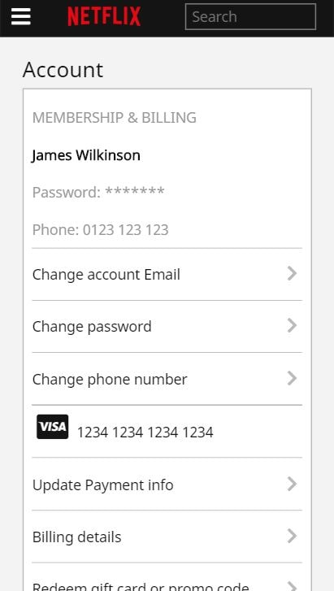
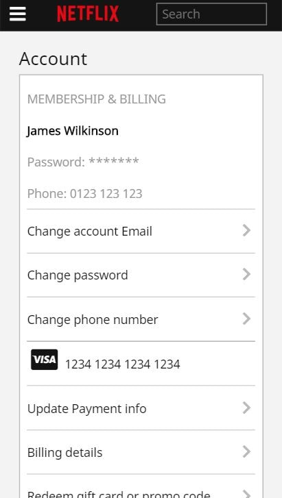

Airplayer
Airplayer is a music player that allows multiple users to
collaboratively control which music is played. Using the Spotify Web
API and Spotify Web playback API, users can create and join ‘rooms’
which allow users to search for tracks on Spotify, and add them to a
playlist that is visible and mutable to all users in the room, and
can be played within the browser.
The front end was
created using React, with and the backend was created using NodeJS,
MongoDB, WebSockets and contains over 100 unit test cases. It’s
quite a large project, with a more thorough technical explanation
detailed within the readme on GitHub. This is also a project I am
actively working on and therefore still contains some issues, most
of which can typically be fixed by refreshing the page.
After fixing these issues, my plan is to add a feature that will
recommend tracks based on the tracks that are commonly listened to
by users in the room, as well as using Spotify’s recommendation API
to find new tracks based on the listening habits of users in the
room. I also plan on creating a native version using React Native
as the Spotify Webplayback API is not supported on mobile.


Mosaicify
Mosaicify turns images into a mosaic composed of other images. Users can upload a file and search for
images using the Pixabay API to turn them into a mosaic of those images, as well as manipulate few
settings that
determine the quality of the image. Check the readme for a more technical explanation of the project.
For me this project was mostly a test of speed, as I aimed to spend no more than a week creating it.
During this project I incorporated some functional programming concepts and became much more
comfortable
handling asynchronous code using promises, as well as learning about image manipulation.


 

Notflix
Notflix is a Netflix clone created with React, NodeJS and MongoDB. Instead of using real movies, I
recreated the front end and used movie trailers from YouTube. Google are not very generous with their
free
API calls, therefore I only have around 200 trailers available.
This was my first React project and contains full CRUD functionality, authentication, responsive
design
for all screen sizes, as well as integration with the MovieDB API, Youtube Web API and Youtube
Playback
API.


Gitview
GitView is a solution for traversing image-dense GitHub repositories in a more user friendly way than
it
is handled on the GitHub website. To use the tool, simply copy and paste a public GitHub repository
into
the search bar.
Below are a few links of some example repositories to test with:
- https://github.com/Gethe/wow-ui-textures
- https://github.com/simple-icons/simple-icons
- https://github.com/akveo/eva-icons
During this project I gained experience using various ES6+ features such as Classes, async Await as well as using the GitHub API.


World of Wacraft Ascension Talent Calculator
This project aimed to create a more mobile friendly experience for the World of Warcraft Private
Server
'Ascension' talent calculator, as the one provided on the official website was not responsive.
I created the front end using vanilla JavaScript and CSS Grid. The focus of this project was to learn
how
to manipulate the DOM, handle asynchronous code and create response design using a mobile first
approach.
I also learned a lot about the more complex parts of JavaScript, such as prototypal delegation,
closures
and ‘this’.
While this project doesn’t have a backend, I managed to figure out how API calls where being sent from
the
official version of the application servers , and pulled data for the tooltips and images from there.